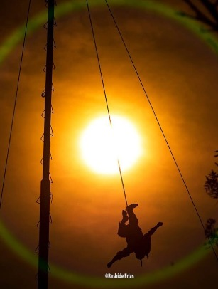
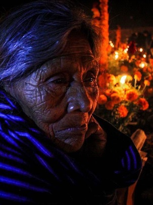
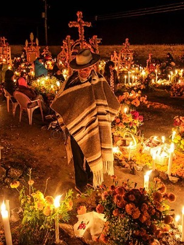
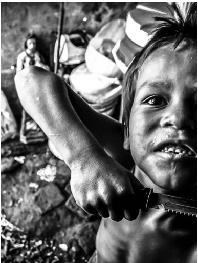
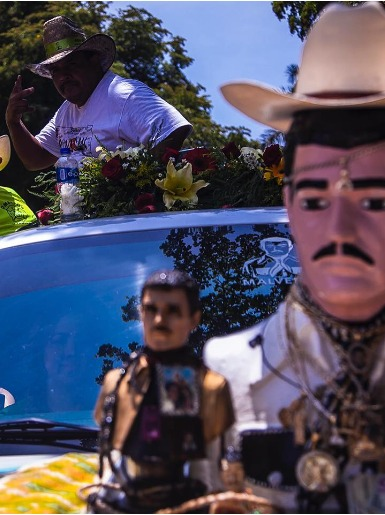
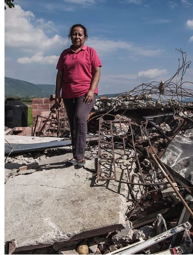
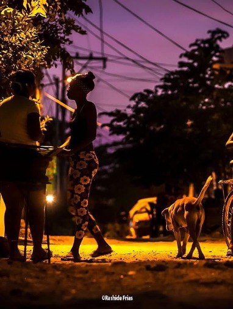
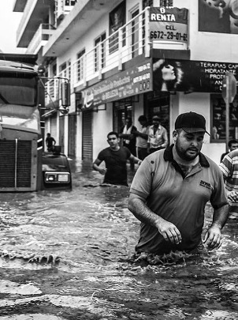

Fotoperiodista y narrador visual, especializado en documentales sobre la cultura y la historia de México. Su trabajo ha sido reconocido internacionalmente por su enfoque único y comprometido con las historias humanas detrás de los eventos más importantes.
Contacto: enrique.rashide@correo.com